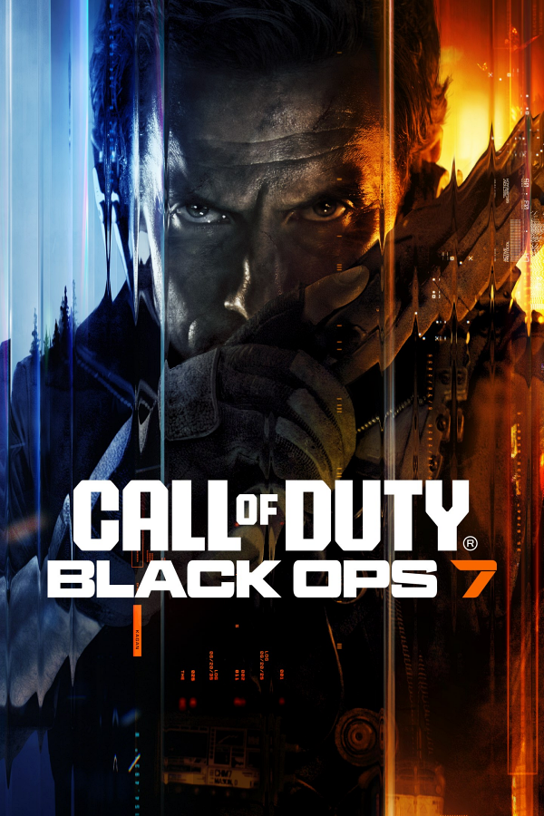

Game profile

Call Of Duty: Black Ops 7
Every archived year-end list appearance, including placement and points earned.
About the Game
Set in 2035—ten years after the events of Call of Duty: Black Ops II (2012)—Black Ops 7's campaign will follow Black Ops II protagonist David Mason (Milo Ventimiglia) and his team of agents as they pursue "a manipulative enemy who weaponizes fear above all else".
| Released | 2025-11-13 |
|---|---|
| Developer | Raven Software, Treyarch, Infinity Ward, Beenox, Sledgehammer Games, High Moon Studios, Activision Shanghai, Demonware |
| Publisher | Activision Blizzard, Activision Value Publishing |
| Genres | Action, Shooter |
| Platforms | PC, PlayStation 5, Xbox Series S/X |
SingleplayerSteam AchievementsMultiplayerCo-opStory RichcooperativeFirst-PersonPartial Controller SupportFPSOnline Co-OpGoreViolent
Where to Buy
Game information provided by RAWG.
2List appearances
1Years represented
Points by Year
62025 points
List History
| Year | Source | List | Placement | Points |
|---|---|---|---|---|
| 2025 | NME | THE 20 BEST GAMES OF 2025 | NME.com | 14 | 3 |
| 2025 | Virgin Media O2 | The Best Video Games Of 2025 Revealed | Unranked | 3 |